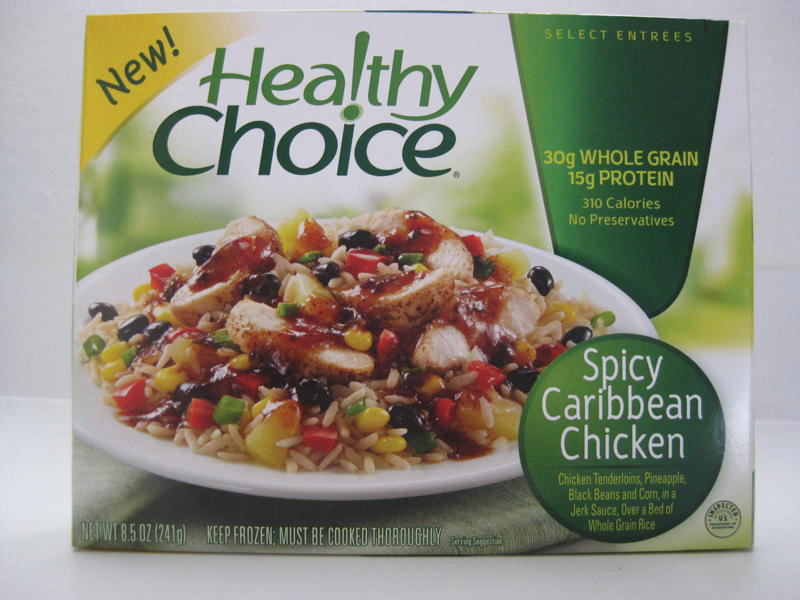
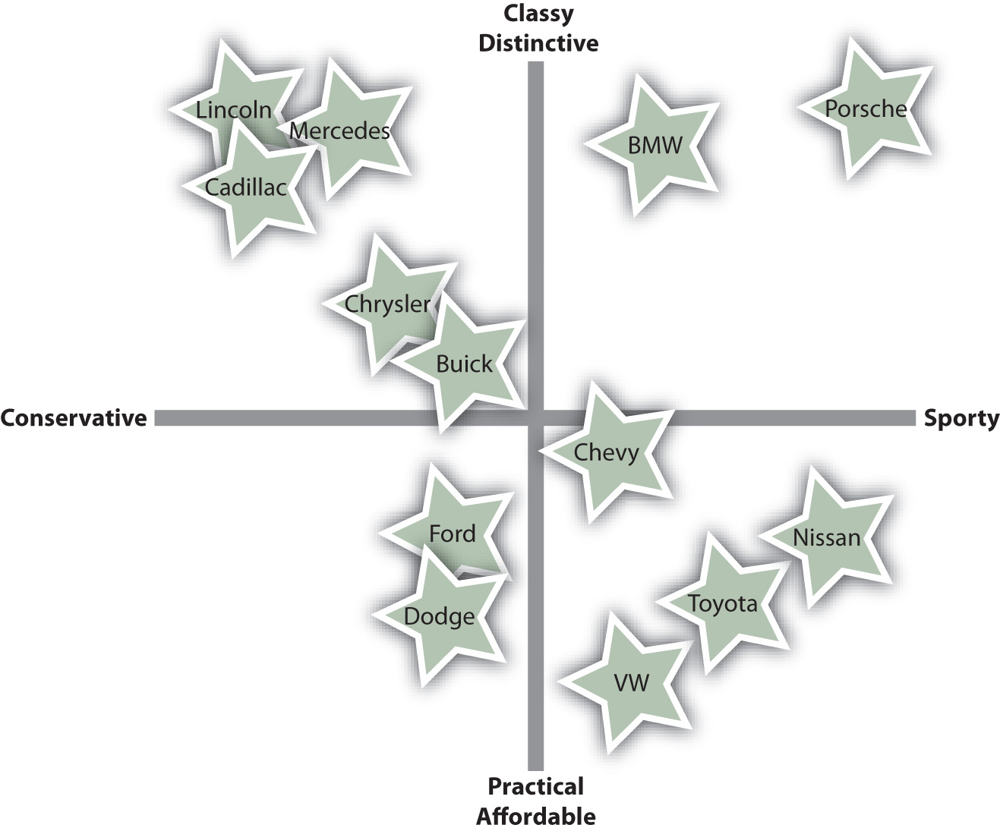

Suppose you have an idea for a great new offering you hope will become a hot seller. Before you quit your day job, you’ll need to ask yourself, “Does my idea satisfy consumers’ needs and add value to existing products?” “Who’s going to buy my product?” and “Will there be enough of these people to make it worth my while?”
Certain people will be more interested in what you plan to offer than others. Not everyone needs homeowners’ insurance, not everyone needs physical therapy services, and not every organization needs to purchase vertical lathes or CT scanners. Among those that do, some will buy a few, and a few will buy many. In terms of potential buyers, not all of them are “created equal.” Some customers are more equal than others, however. A number of people might be interested in your product idea if it satisfies a need, adds value, is priced right, or if they are aware when your product exists in the marketplace.
Your goal is to figure out which people and organizations are interested in your product ideas. To do this you will need to divide or segment the people and organizations into different groups of potential buyers with similar characteristics. This process is called market segmentationThe process of breaking down all consumers into groups of potential buyers with similar characteristics. and involves asking the question, What groups of buyers are similar enough that the same product or service will appeal to all of them?Bruce R. Barringer and Duane Ireland, Entrepreneurship: Successfully Launching New Ventures, 3rd ed. (Upper Saddle River, NJ: Prentice Hall, 2010). After all, your marketing budget is likely to be limited. You need to get the biggest bang for your buck by focusing on those people you truly have a shot at selling to and tailoring your offering toward them.
The segment(s) or group(s) of people and organizations you decide to sell to is called a target marketThe select group of people you choose to sell to.. Targeted marketing, or differentiated marketing, means that you may differentiate some aspect of marketing (offering, promotion, price) for different groups of customers selected. It is a relatively new phenomenon. Mass marketingSelling the same product to all consumers., or undifferentiated marketing, came first. It evolved along with mass production and involves selling the same product to everybody. You can think of mass marketing as a shotgun approach: you blast out as many marketing messages as possible on every medium available as often as you can afford.Robert Spellings, Jr., “Mass Marketing Is Dead. Make Way for Personal Marketing,” The Direct Marketing Voice, March 20, 2009, http://thedirectmarketingvoice.com/2009/03/20/mass-marketing-is-dead-make-way-for-personal-marketing (accessed December 2, 2009). By contrast, targeted marketing is more like shooting a rifle; you take careful aim at one type of customer with your message.
Automaker Henry Ford was very successful at both mass production and mass marketing. Ford pioneered the modern-day assembly line early in the twentieth century, which helped him cost-effectively pump out huge numbers of identical Model T automobiles. They came in only one color: black. “Any customer can have a car painted any color he wants, so long as it is black,” Ford used to joke. He also advertised in every major newspaper and persuaded all kinds of publications to carry stories about the new, inexpensive cars. By 1918, half of all cars on America’s roads were Model Ts.Henry Ford, My Life and Work (Garden City, NY: Garden City Publishing Co., 1922), 72.
Figure 5.1
You could forget about buying a custom Model T from Ford in the early 1900s. The good news? The price was right.
Then Alfred P. Sloan, the head of General Motors (GM), appeared on the scene. Sloan began to segment consumers in the automobile market—to divide them up by the prices they wanted to pay and the different cars they wanted to buy. The idea was to offer a car for every target market or for every income level. His efforts were successful, and in the 1950s, GM overtook Ford as the nation’s top automaker.José María Manzanedo, “Market Segmentation Strategies. How to Maximize Opportunities on the Potential Market,” February 20, 2005, http://www.daemonquest.com/en/research_and_insight/2006/10/11/market_segmentation_strategies_how_to_maximize_opportunities_on_the_potential_market (accessed December 1, 2009). (You might be interested to know that before GM declared bankruptcy in 2009, it was widely believed the automaker actually had too many car models. After eliminating many models including Pontiac and Oldsmobile, General Motors made a turnaround and posted a large profit for 2011.)
The story of General Motors raises an important point, which is that segmenting and targeting markets doesn’t necessarily mean “skinnying down” the number of your customers. In fact, it can help you enlarge your customer base by giving you information with which to successfully adjust some component of your offering—the offering itself, its price, the way you service and market it. More specifically, the process can help you do the following:
The trend today is toward more precise, targeted marketing. Figuring out “who’s who” in terms of your customers involves some detective work, though—often market research. A variety of tools and research techniques can be used to segment markets. Government agencies, such as the U.S. Census Bureau, collect and report vast amounts of population information and economic data that can reveal changing consumption trends. Technology is also making it easier for even small companies and entrepreneurs to gather information about potential customers. For example, the online game company GamePUMA.com originally believed its target market consisted of U.S. customers, but when the firm looked more closely at who was downloading games from its Web site, they were people from all over the globe. With the increased use of social media, companies are able to get information on consumers’ search behavior. Loyalty cards that consumers scan at many grocery and drug stores provide an incredible amount of information on consumers’ buying behavior.
The great product idea you had? Companies are now using the Internet to track people’s Web browsing patterns and segment them into target groups. Even small businesses are able to do this cost-effectively because they don’t need their own software and programs. They can simply sign up online for products like Google’s AdSense and AdWords programs. You can locate potential customers by looking at blog sites and discussion forums on the Web. Big-boards.com has thousands of discussion forums you can mine to find potential customers interested in your product. Do you have a blog? Go to BlogPoll.com, and you can embed a survey in your blog to see what people think of your idea. If you have a Web site, you can download an application onto your iPhone that will give you up-to-the-minute information and statistics on your site’s visitors.
Getting a read on potential target markets doesn’t necessarily have to involve technology. Your own personal experience and talking to would-be buyers is an important part of the puzzle. Go where you think would-be buyers go—restaurants, malls, gyms, subways, grocery stores, daycare centers, and offices—and ask questions to find out what they do during the day, what they talk about, what products or services do you see them using, and do they seem to be having an enjoyable experience when using those products or are they frustrated?
Figure 5.2
The Healthy Choice line of frozen dinners was launched by a heart attack victim.
Healthy Choice frozen dinners were conceived as a result of questioning potential customers. The food-maker ConAgra launched the dinners in the late 1980s after its CEO, Charlie Harper, suffered a heart attack. One day a colleague complimented Harper on his wife’s tasty low-fat turkey stew. That’s when Harper realized there were people like him who wanted healthy convenience foods, so he began talking to them about what they wanted. Two years after the Healthy Choice line was launched, it controlled 10 percent of the frozen-dinner market by concentrating on the health conscious segment.John Birchall, “Out to Launch in a Downturn,” Financial Times, June 4, 2009, 10.
Finding and attracting new customers is generally far more difficult than retaining your current customers. Think about how much time and energy you spend when you switch your business from one firm to another, even when you’re buying something as simple as a haircut. If you aren’t happy with your hair stylist and want to find a new hairdresser, you first have to talk to people with haircuts you like or read reviews of salons. Once you decide on a particular salon, you have to find it and explain to the new hairdresser how you want your hair cut and hope he or she gets it right. You also have to figure out what type of credit cards the new salon will accept and whether tips can be put on your credit card.
Finding new customers, getting to know them, and figuring out what they really want is also a difficult process, one that’s fraught with trial and error. That’s why it’s so important to get to know, form close relationships, and focus selling efforts on current customers.John Birchall, “Value Trend Tests Brand Loyalty,” Financial Times, March 31, 2009, 12.
In 2009, Backroads, a California company focused on adventure-based travel increased its revenues by creating a personalized marketing campaign for people who had done business with them in the past. Backroads looked at customers’ past purchases, the seasons in which they took their trips, the levels of activity associated with them, and whether or not the customers tended to vacation with children. Based on their findings, Backroads created three relevant trip suggestions for each customer and sent postcards and e-mails with links to customized Web pages reminding each customer of the trips he/she had previously booked with Backroads and suggesting new ones. “In terms of past customers, it was like off-the-charts better [than past campaigns],” says Massimo Prioreschi, the vice president of Backroads’ sales and marketing group.“Lift Sales with Personalized, Multi-channel Messages: 6 Steps,” July 9, 2009, http://www.marketingsherpa.com/article.php?ident=31299 (accessed December 2, 2009).
In addition to studying their buying patterns, firms also try to get a better understanding of their customers by surveying them or hiring marketing research firms to do so or by utilizing loyalty programs. (A good source for finding marketing research companies is http://www.greenbook.org.) For example, if you sign up to become a frequent flier with a certain airline, the airline will likely ask you a number of questions about your likes and dislikes. This information will then be entered into a customer relationship management (CRM) system, and you might be e-mailed special deals based on the routes you tend to fly. British Airways goes so far as to track the magazines its most elite fliers like to read so the publications are available to them on its planes.
Twitter is another way companies are keeping in touch with their customers and boosting their revenues. When the homemaking maven Martha Stewart schedules a book signing, she tweets her followers, and voilà, many of them show up at the bookstore she’s appearing at to buy copies. Finding ways to interact with customers that they enjoy—whether it’s meeting or “tweeting” them, or putting on events and tradeshows they want to attend—is the key to forming relationships with them.
Many firms, even small ones, are using Facebook to develop closer relationships with their customers. Hansen Cakes, a Beverly Hills (California) bakery, has about two thousand customers who visit its Facebook page. During her downtime at the bakery, employee Suzi Finer posts “cakes updates” and photos of the goodies she’s working on to the site. Along with information about the cakes, Finer extends special offers to customers and mixes in any gossip about Hollywood celebrities she’s spotted in the area. After Hansen Cakes launched its Facebook page, the bakery’s sales shot up 15–20 percent. “And that’s during the recession,” notes Finer, who is obviously proud of the results she’s gotten.Jefferson Graham, “Cade Decoratero Finds Twitter a Sweet Recipe for Success,” USA Today, April 1, 2009, 5B.
Regardless of how well companies know their customers, it’s important to remember that some customers are highly profitable, others aren’t, and others actually end up costing your firm money to serve. Consequently, you will want to interact with some customers more than others. Believe it or not, some firms deliberately “untarget” unprofitable customers. Best Buy got a lot of attention (not all of it good) when it was discovered they had categorized its buyers into “personas,” or types of buyers, and created customized sales approaches for each. For example, an upper-middle-class woman was referred to as a “Jill.” A young urban man was referred to as a “Buzz.” Pesky, bargain-hunting customers that Best Buy couldn’t make much of a profit from were referred to as “devils” and taken off the company’s mailing lists.Meg Marco, “LEAKS: Best Buy’s Internal Customer Profiling Document,” The Consumerist, March 18, 2008, http://consumerist.com/368894/leaks-best-buys-internal-customer-profiling-document (accessed December 2, 2009).
The knife cuts both ways, though. Not all firms are equal in the minds of consumers, who will choose to do business with some companies rather than others. To consumers, market segmentation means: meet my needs—give me what I want.“Market Segmentation,” The Market Segmentation Company, http://www.marketsegmentation.co.uk/segmentation_tmsc.htm (accessed December 2, 2009).
Steps companies take to target their best customers, form close, personal relationships with them, and give them what they want—a process called one-to-one marketingForming close, personal relationships with customers and giving them exactly what they want.—are outlined in “Steps in One-to-One Marketing.” In terms of our shotgun versus rifle approach, you can think of one-to-one marketing as a rifle approach, but with an added advantage: now you have a scope on your rifle.
One-to-one marketing is an idea proposed by Don Peppers and Martha Rogers in their 1994 book The One to One Future. The book described what life would be like after mass marketing. We would all be able to get exactly what we want from sellers, and our relationships with them would be collaborative, rather than adversarial. Are we there yet? Not quite, but it does seem to be the direction the trend toward highly targeted marketing is leading.
Interview with Apurva Ghelani
http://app.wistia.com/embed/medias/de5a1d6419Listen to Apurva Ghelani, a senior sales engineer, from the marketing company Air2Web, discuss how companies like NASCAR get permission from consumers to send them advertisements via their wireless devices.
Choosing select groups of people to sell to is called target marketing, or differentiated marketing. Mass marketing, or undifferentiated marketing, involves selling the same product to everyone. The trend today is toward more precise, targeted marketing. Finding and attracting new customers is generally far more difficult than retaining one’s current customers, which is why organizations try to interact with and form relationships with their current customers. The goal of firms is to do as much business with their best customers as possible. Forming close, personal relationships with customers and giving them exactly what they want is a process called one-to-one marketing. It is the opposite of mass marketing.
Sellers can choose to pursue consumer markets, business-to-business (B2B) markets, or both. Consequently, one obvious way to begin the segmentation process is to segment markets into these two types of groups.
Different factors influence consumers to buy certain things. Many of the same factors can also be used to segment customers. A firm will often use multiple segmentation basesCriteria used to classify and divide buyers into different groups., or criteria to classify buyers, to get a fuller picture of its customers and create real value for them. Each variable adds a layer of information. Think of it as being similar to the way in which your professor builds up information on a PowerPoint slide to the point at which you are able to understand the material being presented.
There are all kinds of characteristics you can use to slice and dice a market. “Big-and-tall” stores cater to the segment of population that’s larger sized. What about people with wide or narrow feet, or people with medical conditions, or certain hobbies? Next, we look primarily at the ways in which consumer markets can be segmented. Later in the chapter, we’ll look at the ways in which B2B markets can be segmented.
Table 5.1 "Common Ways of Segmenting Buyers" shows some of the different types of buyer characteristics used to segment markets. Notice that the characteristics fall into one of four segmentation categories: behavioral, demographic, geographic, or psychographic. We’ll discuss each of these categories in a moment. For now, you can get a rough idea of what the categories consist of by looking at them in terms of how marketing professionals might answer the following questions:
Table 5.1 Common Ways of Segmenting Buyers
| By Behavior | By Demographics | By Geography | By Psychographics |
|---|---|---|---|
|
|
|
|
Behavioral segmentationDividing people and organization into groups according to how they behave with or act toward products. divides people and organization into groups according to how they behave with or act toward products. Benefits segmentation—segmenting buyers by the benefits they want from products—is very common. Take toothpaste, for example. Which benefit is most important to you when you buy a toothpaste: The toothpaste’s price, ability to whiten your teeth, fight tooth decay, freshen your breath, or something else? Perhaps it’s a combination of two or more benefits. If marketing professionals know what those benefits are, they can then tailor different toothpaste offerings to you (and other people like you). For example, Colgate 2-in-1 Toothpaste & Mouthwash, Whitening Icy Blast is aimed at people who want the benefits of both fresher breath and whiter teeth.
A Vintage Colgate Commercial from the 1950s
http://www.youtube.com/watch?v=9QrFa3tDwvYWatch the YouTube video to see a vintage Colgate toothpaste ad that describes the product’s various benefits to consumers. (Onscreen kissing was evidently too racy for the times.)
Another way in which businesses segment buyers is by their usage rates—that is, how often, if ever, they use certain products. Harrah’s, an entertainment and gaming company, gathers information about the people who gamble at its casinos. High rollers, or people who spend a lot of money, are considered “VIPs.” VIPs get special treatment, including a personal “host” who looks after their needs during their casino visits. Companies are interested in frequent users because they want to reach other people like them. They are also keenly interested in nonusers and how they can be persuaded to use products.
The way in which people use products is also be a basis for segmentation. Avon Skin So Soft was originally a beauty product, but after Avon discovered that some people were using it as a mosquito repellant, the company began marketing it for that purpose. Eventually, Avon created a separate product called Skin So Soft Bug Guard, which competes with repellents like Off! Similarly, Glad, the company that makes plastic wrap and bags, found out customers were using its Press’n Seal wrap in ways the company could never have imagined. The personnel in Glad’s marketing department subsequently launched a Web site called 1000uses.com that contains both the company’s and consumers’ use tips. Some of the ways in which people use the product are pretty unusual, as evidenced by the following comment posted on the site: “I have a hedgehog who likes to run on his wheel a lot. After quite a while of cleaning a gross wheel every morning, I got the tip to use ‘Press’n Seal wrap’ on his wheel, making clean up much easier! My hedgie can run all he wants, and I don’t have to think about the cleanup. Now we’re both GLAD!”
Although we doubt Glad will ever go to great lengths to segment the Press ’n Seal market by hedgehog owners, the firm has certainly gathered a lot of good consumer insight about the product and publicity from its 1000uses.com Web site. (Incidentally, one rainy day, the author of this chapter made “rain boots” out of Press ’n Seal for her dog. But when she later tried to tear them off of the dog’s paws, he bit her. She is now thinking of trading him in for a hedgehog.)
Segmenting buyers by personal characteristics such as age, income, ethnicity and nationality, education, occupation, religion, social class, and family size is called demographic segmentationSegmenting buyers by personal characteristics such as their ages, incomes, ethnicity, and family sizes.. Demographics are commonly utilized to segment markets because demographic information is publicly available in databases around the world. You can obtain a great deal of demographic information on the U.S. Census Bureau’s Web site (http://www.census.gov). Other government Web sites you can tap include FedStats (http://www.fedstats.gov) and The World Factbook (http://www.cia.gov/cia/publications/factbook), which contains statistics about countries around the world. In addition to current statistics, the sites contain forecasts of demographic trends, such as whether some segments of the population are expected to grow or decline.
At this point in your life, you are probably more likely to buy a car than a funeral plot. Marketing professionals know this. That’s why they try to segment consumers by their ages. You’re probably familiar with some of the age groups most commonly segmented (see Table 5.2 "U.S. Generations and Characteristics") in the United States. Into which category do you fall?
Table 5.2 U.S. Generations and Characteristics
| Generation | Also Known As | Birth Years | Characteristics |
|---|---|---|---|
| Seniors | “The Silent Generation,” “Matures,” “Veterans,” and “Traditionalists” | 1945 and prior |
|
| Baby Boomers | 1946–1964 |
|
|
| Generation X | 1965–1979 |
|
|
| Generation Y | “Millennials,” “Echo Boomers,” includes “Tweens” (preteens) | 1980–2000 |
|
| Note: Not all demographers agree on the cutoff dates between the generations. | |||
Today’s college-age students (Generation Y) compose the largest generation. The baby boomer generation is the second largest, and over the course of the last thirty years or so, has been a very attractive market for sellers. Retro brandsOld brands or products companies “bring back” for a period of time.—old brands or products that companies “bring back” for a period of time—were aimed at baby boomers during the recent economic downturn. Pepsi Throwback and Mountain Dew Throwback, which are made with cane sugar—like they were “back in the good old days”—instead of corn syrup, are examples.Barry Schlacter, “Sugar-Sweetened Soda Is Back in the Mainstream,” Fort Worth Star-Telegram, April 22, 2009, 1C, 5C. Marketing professionals believe they appealed to baby boomers because they reminded them of better times—times when they didn’t have to worry about being laid off, about losing their homes, or about their retirement funds and pensions drying up.
Baby boomers are aging and the size of the group will eventually decline. By contrast, the members of Generation Y have a lifetime of buying still ahead of them, which translates to a lot of potential customer lifetime value (CLV), the amount a customer will spend on a particular brand over his/her lifetime, for marketers if they can capture this group of buyers. However, a recent survey found that the latest recession had forced teens to change their spending habits and college plans and that roughly half of older Generation Yers reported they had no savings.“Generation Y Lacking Savings,” Fort Worth Star-Telegram, September 13, 2009, 2D.
So which group or groups should your firm target? Although it’s hard to be all things to all people, many companies try to broaden their customer bases by appealing to multiple generations so they don’t lose market share when demographics change. Several companies have introduced lower-cost brands targeting Generation Xers, who have less spending power than boomers. For example, kitchenware and home-furnishings company Williams-Sonoma opened the Elm Street chain, a less-pricey version of the Pottery Barn franchise. The Starwood hotel chain’s W hotels, which feature contemporary designs and hip bars, are aimed at Generation Xers.Richard K. Miller and Kelli Washington, The 2009 Entertainment, Media & Advertising Market Research Handbook, 10th ed. (Loganville, GA: Richard K. Miller & Associates, 2009), 157–66.
The video game market is very proud of the fact that along with Generation X and Generation Y, many older Americans still play video games. (You probably know some baby boomers who own a Nintendo Wii.) Products and services in the spa market used to be aimed squarely at adults, but not anymore. Parents are now paying for their tweens to get facials, pedicures, and other pampering in numbers no one in years past could have imagined.
Evian Water: Roll, Baby, Roll!
http://www.youtube.com/watch?v=_PHnRIn74AgWatch the YouTube video to see a fun generational type of advertisement. No, the ad isn’t designed to appeal to babies. It’s aimed at us adults!
As early as the 1970s, U.S. automakers found themselves in trouble because of changing demographic trends. Many of the companies’ buyers were older Americans inclined to “buy American.” These people hadn’t forgotten that Japan bombed Pearl Harbor during World War II and weren’t about to buy Japanese vehicles, but younger Americans were. Plus, Japanese cars had developed a better reputation. Despite the challenges U.S. automakers face today, they have taken great pains to cater to the “younger” generation—today’s baby boomers who don’t think of themselves as being old. If you are a car buff, you perhaps have noticed that the once-stodgy Cadillac now has a sportier look and stiffer suspension. Likewise, the Chrysler 300 looks more like a muscle car than the old Chrysler Fifth Avenue your great-grandpa might have driven.
Automakers have begun reaching out to Generations X and Y, too. General Motors (GM) has sought to revamp the century-old company by hiring a new younger group of managers—managers who understand how Generation X and Y consumers are wired and what they want. “If you’re going to appeal to my daughter, you’re going to have to be in the digital world,” explained one GM vice president.Bob Cox, “GM Hopes Its New Managers Will Energize It,” Fort Worth Star-Telegram, August 29, 2009, 1C–4C.
Companies have to develop new products designed to appeal to Generations X and Y and also find new ways to reach them. People in these generations not only tend to ignore traditional advertising but also are downright annoyed by it. To market to Scion drivers, who are generally younger, Toyota created Scion Speak, a social networking site where they can communicate, socialize, and view cool new models of the car. Online events such as the fashion shows broadcast over the Web are also getting the attention of younger consumers, as are text, e-mail, and Twitter messages they can sign up to receive so as to get coupons, cash, and free merchandise. Advergames are likewise being used to appeal to the two demographic groups. AdvergamesElectronic games sellers create to promote a product or service. are electronic games sellers create to promote a product or service. Would you like to play one now? Click on the following link to see a fun one created by Burger King to advertise its Tender Crisp Chicken.
http://web.archive.org/web/20110426194400/http://www.bk.com/en/us/campaigns/subservient-chicken.html
You can boss the “subservient chicken” around in this advergame. He will do anything you want—well, almost anything.
Tweens might appear to be a very attractive market when you consider they will be buying products for years to come. But would you change your mind if you knew that baby boomers account for 50 percent of all consumer spending in the United States? Americans over sixty-five now control nearly three-quarters of the net worth of U.S. households; this group spends $200 billion a year on major “discretionary” (optional) purchases such as luxury cars, alcohol, vacations, and financial products.Tim Reisenwitz, Rajesh Iyer, David B. Kuhlmeier, and Jacqueline K. Eastman, “The Elderly’s Internet Usage: An Updated Look,” Journal of Consumer Marketing, 24, no. 7 (2007): 406–18.
Income is used as a segmentation variable because it indicates a group’s buying power and may partially reflect their education levels, occupation, and social classes. Higher education levels usually result in higher paying jobs and greater social status. The makers of upscale products such as Rolexes and Lamborghinis aim their products at high-income groups. However, a growing number of firms today are aiming their products at lower-income consumers. The fastest-growing product in the financial services sector is prepaid debit cards, most of which are being bought and used by people who don’t have bank accounts. Firms are finding that this group is a large, untapped pool of customers who tend to be more brand loyal than most. If you capture enough of them, you can earn a profit.Constantine von Hoffman, “For Some Marketers, Low Income Is Hot,” Brandweek, September 11, 2006, http://cfsinnovation.com/content/some-marketers-low-income-hot (accessed December 2, 2009). Based on the targeted market, businesses can determine the location and type of stores where they want to sell their products.
Sometimes income isn’t always indicative of who will buy your product. Companies are aware that many consumers want to be in higher income groups and behave like they are already part of them. Mercedes Benz’s cheaper line of “C” class vehicles is designed to appeal to these consumers.
Gender is another way to segment consumers. Men and women have different needs and also shop differently. Consequently, the two groups are often, but not always, segmented and targeted differently. Marketing professionals don’t stop there, though. For example, because women make many of the purchases for their households, market researchers sometimes try to further divide them into subsegments. (Men are also often subsegmented.) For women, those segments might include stay-at-home housewives, plan-to-work housewives, just-a-job working women, and career-oriented working women. Research has found that women who are solely homemakers tend to spend more money, perhaps because they have more time.
In addition to segmenting by gender, market researchers might couple gender with marital status and other demographic characteristics. For, example, did you know that more women in America than ever before (51 percent) now live without spouses? Can you think of any marketing opportunities this might present?Thomas Barry, Mary Gilly, and Lindley Doran, “Advertising to Women with Different Career Orientations,” Journal of Advertising Research 25 (April–May 1985): 26–35.
Family life cycleThe stages families go through over time and how it affects people’s buying behavior. refers to the stages families go through over time and how it affects people’s buying behavior. For example, if you have no children, your demand for pediatric services (medical care for children) is likely to be slim to none, but if you have children, your demand might be very high because children frequently get sick. You may be part of the target market not only for pediatric services but also for a host of other products, such as diapers, daycare, children’s clothing, entertainment services, and educational products. A secondary segment of interested consumers might be grandparents who are likely to spend less on day-to-day childcare items but more on special-occasion gifts for children. Many markets are segmented based on the special events in people’s lives. Think about brides (and want-to-be brides) and all the products targeted at them, including Web sites and television shows such as Say Yes to the Dress, My Fair Wedding, Platinum Weddings, and Bridezillas.
Resorts also segment vacationers depending on where they are in their family life cycles. When you think of family vacations, you probably think of Disney resorts. Some vacation properties, such as Sandals, exclude children from some of their resorts. Perhaps they do so because some studies show that the market segment with greatest financial potential is married couples without children.Brian J. Hill, Carey McDonald, and Muzzafer Uysal, “Resort Motivations for Different Family Life Cycle Stages,” Visions in Leisure and Business Number 8, no. 4 (1990): 18–27.
Keep in mind that although you might be able to isolate a segment in the marketplace, including one based on family life cycle, you can’t make assumptions about what the people in it will want. Just like people’s demographics change, so do their tastes. For example, over the past few decades U.S. families have been getting smaller. Households with a single occupant are more commonplace than ever, but until recently, that hasn’t stopped people from demanding bigger cars (and more of them) as well as larger houses, or what some people jokingly refer to as “McMansions.”
The trends toward larger cars and larger houses appear to be reversing. High energy costs, the credit crunch, and concern for the environment are leading people to demand smaller houses. To attract people such as these, D. R. Horton, the nation’s leading homebuilder, and other construction firms are now building smaller homes.
People’s ethnic backgrounds have a big impact on what they buy. If you’ve visited a grocery store that caters to a different ethnic group than your own, you were probably surprised to see the types of products sold there. It’s no secret that the United States is becoming—and will continue to become—more diverse. Hispanic Americans are the largest and the fastest-growing minority in the United States. Companies are going to great lengths to court this once overlooked group. In California, the health care provider Kaiser Permanente runs television ads letting members of this segment know that they can request Spanish-speaking physicians and that Spanish-speaking nurses, telephone operators, and translators are available at all of its clinics.Eric N. Berkowitz, The Essentials of Health Care Marketing, 2nd ed. (Sudbury, MA: Jones & Bartlett Publishers, 2006), 13.
African Americans are the second-largest ethnic group in America. Collectively, they have the most buying power of any ethnic group in America. Many people of Asian descent are known to be early adapters of new technology and have above-average incomes. As a result, companies that sell electronic products, such as AT&T, spend more money segmenting and targeting the Asian community.“Telecommunications Marketing Opportunities to Ethnic Groups: Segmenting Consumer Markets by Ethnicity, Age, Income and Household Buying Patterns, 1998–2003,” The Insight Research Corporation, 2003, http://www.insight-corp.com/reports/ethnic.asp (accessed December 2, 2009). Table 5.3 "Major U.S. Ethnic Segments and Their Spending" contains information about the number of people in these groups and their buying power.
Table 5.3 Major U.S. Ethnic Segments and Their Spending
| Group | Percentage of U.S. Population | Annual Spending Power (Billions of Dollars) |
|---|---|---|
| Hispanics | 13.7 | 736 |
| African Americans | 13.0 | 761 |
| Asians | 5.0 | 397 |
Source: New American Dimensions, LLC.
As you can guess, even within various ethnic groups there are many differences in terms of the goods and services buyers choose. Consequently, painting each group with a broad brush would leave you with an incomplete picture of your buyers. For example, although the common ancestral language among the Hispanic segment is Spanish, Hispanics trace their lineages to different countries. Nearly 70 percent of Hispanics in the United States trace their lineage to Mexico; others trace theirs to Central America, South America, and the Caribbean.
All Asians share is race. Chinese, Japanese, and Korean immigrants do not share the same language.“Telecommunications Marketing Opportunities to Ethnic Groups: Segmenting Consumer Markets by Ethnicity, Age, Income and Household Buying Patterns, 1998–2003,” The Insight Research Corporation, 2003, http://www.insight-corp.com/reports/ethnic.asp (accessed December 2, 2009). Moreover, both the Asian and Hispanic market segments include new immigrants, people who immigrated to the United States years ago, and native-born Americans. So what language will you use to communicate your offerings to these people, and where?
Subsegmenting the markets could potentially help you. New American Dimension, a multicultural research firm, has further divided the Hispanic market into the following subsegments:
You could go so far as to break down segments to the individual level, which is the goal behind one-to-one marketing. However, doing so would be dreadfully expensive, notes Juan Guillermo Tornoe, a marketing expert who specializes in Hispanic marketing issues. After all, are you really going to develop different products and different marketing campaigns and communications for each group? Probably not, but “you need to perform your due diligence and understand where the majority of the people you are trying to reach land on this matrix, modifying your message according to this insight,” Tornoe explains.Juan Guillermo Tornoe, “Hispanic Marketing Basics: Segmentation of the Hispanic Market,” January 18, 2008, http://learn.latpro.com/segmentation-of-the-hispanic-market/ (accessed December 2, 2009).
Suppose your great new product or service idea involves opening a local store. Before you open the store, you will probably want to do some research to determine which geographical areas have the best potential. For instance, if your business is a high-end restaurant, should it be located near the local college or country club? If you sell ski equipment, you probably will want to locate your shop somewhere in the vicinity of a mountain range where there is skiing. You might see a snowboard shop in the same area but probably not a surfboard shop. By contrast, a surfboard shop is likely to be located along the coast, but you probably would not find a snowboard shop on the beach.
Geographic segmentationSegmenting buyers by where they are located. divides the market into areas based on location and explains why the checkout clerks at stores sometimes ask for your zip code. It’s also why businesses print codes on coupons that correspond to zip codes. When the coupons are redeemed, the store can find out where its customers are located—or not located. GeocodingThe process of plotting geographic marketing information takes on a map. is a process that takes data such as this and plots it on a map. Geocoding can help businesses see where prospective customers might be clustered and target them with various ad campaigns, including direct mail. One of the most popular geocoding software programs is PRIZM NE, which is produced by a company called Claritas. PRIZM NE uses zip codes and demographic information to classify the American population into segments. The idea behind PRIZM is that “you are where you live.” Combining both demographic and geographic information is referred to as geodemographicsCombining both demographic and geographic information for marketing purposes. or neighborhood geography. The idea is that housing areas in different zip codes typically attract certain types of buyers with certain income levels. To see how geodemographics works, visit the following page on Claritas’ Web site: http://www.claritas.com/MyBestSegments/Default.jsp?ID=20.
Type in your zip code, and you will see customer profilesThe description of a type of customer based on market segmentation criteria. of the types of buyers who live in your area. Table 5.4 "An Example of Geodemographic Segmentation for 76137 (Fort Worth, TX)" shows the profiles of buyers who can be found the zip code 76137—the “Brite Lites, Li’l City” bunch, and “Home Sweet Home” set. Click on the profiles on the Claritas site to see which one most resembles you.
Table 5.4 An Example of Geodemographic Segmentation for 76137 (Fort Worth, TX)
| Number | Profile Name |
|---|---|
| 12 | Brite Lites, Li’l City |
| 19 | Home Sweet Home |
| 24 | Up-and-Comers |
| 13 | Upward Bound |
| 34 | White Picket Fences |
The tourism bureau for the state of Michigan was able to identify and target different customer profiles using PRIZM. Michigan’s biggest travel segment are Chicagoans in certain zip codes consisting of upper-middle-class households with children—or the “kids in cul-de-sacs” group, as Claritas puts it. The bureau was also able to identify segments significantly different from the Chicago segment, including blue-collar adults in the Cleveland area who vacation without their children. The organization then created significantly different marketing campaigns to appeal to each group.
City size and population densityThe number of people per square mile. (the number of people per square mile) are also used for segmentation purposes. Have you ever noticed that in rural towns, McDonald’s restaurants are hard to find, but Dairy Queens (DQ) are usually easy to locate? McDonald’s generally won’t put a store in a town of fewer than five thousand people. However, this is prime turf for the “DQ”— because it doesn’t have to compete with bigger franchises like McDonald’s.
Proximity marketingThe process of segmenting buyers geographically and targeting them within a few hundred feet of a business businesses using wireless technology. is an interesting new technology firms are using to segment and target buyers geographically within a few hundred feet of their businesses using wireless technology. In some areas, you can switch your mobile phone to a “discoverable mode” while you’re shopping and, if you want, get ads and deals from stores as you pass by them, which is often less expensive than hiring people to hand you a flier as you walk by.“Bluetooth Proximity Marketing,” April 24, 2007, http://bluetomorrow.com/bluetooth-articles/marketing-technologies/bluetooth-proximity-marketing.html (accessed December 2, 2009).
Interview with Apurva Ghelani
http://app.wistia.com/embed/medias/d0b89776beTo learn about how proximity marketing works at a real company, listen to Apurva Ghelani in this audio clip. Ghelani is a senior sales engineer for Air2Web, a company that helps businesses promote their brands and conduct transactions with people via their mobile phones.
In addition to figuring out where to locate stores and advertise to customers in that area, geographic segmentation helps firms tailor their products. Chances are you won’t be able to find the same heavy winter coat you see at a Walmart in Montana at a Walmart in Florida because of the climate differences between the two places. Market researchers also look at migration patterns to evaluate opportunities. TexMex restaurants are more commonly found in the southwestern United States. However, northern states are now seeing more of them as more people of Hispanic descent move northward.
If your offering fulfills the needs of a specific demographic group, then the demographic can be an important basis for identifying groups of consumers interested in your product. What if your product crosses several market segments? For example, the group of potential consumers for cereal could be “almost” everyone although groups of people may have different needs with regard to their cereal. Some consumers might be interested in the fiber, some consumers (especially children) may be interested in the prize that comes in the box, other consumers may be interested in the added vitamins, and still other consumers may be interested in the type of grains. Associating these specific needs with consumers in a particular demographic group could be difficult. Marketing professionals want to know why consumers behave the way they do, what is of high priority to them, or how they rank the importance of specific buying criteria. Think about some of your friends who seem a lot like you. Have you ever gone to their homes and been shocked by their lifestyles and how vastly different they are from yours? Why are their families so much different from yours?
Psychographic segmentationSegmenting people by their activities, interests, opinion, attitudes, values, and lifestyles. can help fill in some of the blanks. Psychographic information is frequently gathered via extensive surveys that ask people about their activities, interests, opinion, attitudes, values, and lifestyles. One of the most well-known psychographic surveys is VALS (which originally stood for “Values, Attitudes, and Lifestyles”) and was developed by a company called SRI International in the late 1980s. SRI asked thousands of Americans the extent to which they agreed or disagreed with questions similar to the following: “My idea of fun at a national park would be to stay at an expensive lodge and dress up for dinner” and “I could stand to skin a dead animal.”James H. Donnelly, preface to Marketing Management, 9th ed., by J. Paul Peter (New York: McGraw-Hill Professional, 2002), 79. Based on their responses to different questions, consumers were divided up into the following categories, each characterized by certain buying behaviors.
To find out which category you’re in, take a VALS survey at http://www.sric-bi.com/vals/surveynew.shtml. VALS surveys have been adapted and used to study buying behavior in other countries, too. Note that both VALS and PRIZM group buyers are based on their values and lifestyles, but PRIZM also overlays the information with geographic data. As a result, you can gauge what the buying habits of people in certain zip codes are, which can be helpful if you are trying to figure out where to locate stores and retail outlets.
The segmenting techniques we’ve discussed so far in this section require gathering quantitative information and data. Quantitative information can be improved with qualitative information you gather by talking to your customers and getting to know them. (Recall that this is how Healthy Choice frozen dinners were created.) Consumer insightAn understanding of consumers that results when both quantitative and qualitative information are gathered about them. is what results when you use both types of information. You want to be able to answer the following questions:
Best Buy asked store employees to develop insight about local consumer groups in order to create special programs and processes for them. Employees in one locale invited a group of retirees to their store to explain how to make the switch to digital television. The store sold $350,000 worth of equipment and televisions in just two hours’ time. How much did it cost? The total cost included ninety-nine dollars in labor costs plus coffee and donuts.
Intuit, the company that makes the tax software Quicken, has a “follow me home” program. Teams of engineers from Intuit visit people’s homes and spend a couple of hours watching consumers use Quicken. Then they use the insights they gain to improve the next version of Quicken. Contrast this story with that of a competing firm. When a representative of the firm was asked if he had ever observed consumers installing or using his company’s product, he responded, “I’m not sure I’d want to be around when they were trying to use it.”Eric Nee, “Due Diligence: The Customer Is Always Right,” CIO Insight, May 23, 2003. This company is now struggling to stay in business.
To read about some of the extreme techniques Nokia uses to understand cell phone consumers around the world, click on the following link: http://www.nytimes.com/2008/04/13/magazine/13anthropology-t.html?pagewanted=all.
Many of the same bases used to segment consumer markets are also used to segment B2B markets. For example, Goya Foods is a U.S. food company that sells different ethnic products to grocery stores, depending on the demographic groups the stores serve—Hispanic, Mexican, or Spanish. Likewise, B2B sellers often divide their customers by geographic areas and tailor their products to them accordingly. Segmenting by behavior is common as well. B2B sellers frequently divide their customers based on their product usage rates. Customers that order many goods and services from a seller often receive special deals and are served by salespeople who call on them in person. By contrast, smaller customers are more likely to have to rely on a firm’s Web site, customer service people, and salespeople who call on them by telephone.
Researchers Matthew Harrison, Paul Hague, and Nick Hague have theorized that there are fewer behavioral and needs-based segments in B2B markets than in business-to-consumer (B2C) markets for two reasons: (1) business markets are made up of a few hundred customers whereas consumer markets can be made up of hundreds of thousands of customers, and (2) businesses aren’t as fickle as consumers. Unlike consumers, they aren’t concerned about their social standing or influenced by their families and peers. Instead, businesses are concerned solely with buying products that will ultimately increase their profits. According to Harrison, Hague, and Hague, the behavioral, or needs-based, segments in B2B markets include the following:
B2B sellers, like B2C sellers, are exploring new ways to reach their target markets. Trade shows and direct mail campaigns are two traditional ways of reaching B2B markets. Now, however, firms are finding they can target their B2B customers more cost-effectively via e-mail campaigns, search-engine marketing, and “fan pages” on social networking sites like Facebook. Companies are also creating blogs with cutting-edge content about new products and business trends of interest to their customers. For a fraction of the cost of attending a trade show to exhibit their products, B2B sellers are holding Webcasts and conducting online product demonstrations for potential customers.
Segmentation bases are criteria used to classify buyers. The main types of buyer characteristics used to segment consumer markets are behavioral, demographic, geographic, and psychographic. Behavioral segmentation divides people and organization into groups according to how they behave with or toward products. Segmenting buyers by personal characteristics such as their age, income, ethnicity, family size, and so forth is called demographic segmentation. Geographic segmentation involves segmenting buyers based on where they live. Psychographic segmentation seeks to differentiate buyers based on their activities, interests, opinions, attitudes, values, and lifestyles. Oftentimes a firm uses multiple bases to get a fuller picture of its customers and create value for them. Marketing professionals develop consumer insight when they gather both quantitative and qualitative information about their customers. Many of the same bases used to segment consumer markets are used to segment business-to-business (B2B) markets. However, there are generally fewer behavioral-based segments in B2B markets.
After you segment buyers and develop a measure of consumer insight about them, you can begin to see those that have more potential. Now you are hunting with a rifle instead of a shotgun. The question is, do you want to spend all day hunting squirrels or ten-point bucks? An attractive market has the following characteristics:
Yogurt, Anyone? I Mean, Any Woman?
http://www.youtube.com/watch?v=qMRDLCR8vAEAre women an attractive target market for yogurt sellers? The maker of this humorous YouTube video thinks so. (She seems to imply they are the only market.)
Henry Ford proved that mass marketing can work—at least for a while. Mass marketing is also efficient because you don’t have to tailor any part of the offering for different groups of consumers, which is more work and costs more money. The problem is that buyers are not all alike. If a competitor comes along and offers these groups a product (or products) that better meet their needs, you will lose business.
Most firms tailor their offerings in one way or another to meet the needs of different segments of customers. Because these organizations don’t have all their eggs in one basket, they are less vulnerable to competition. Marriott International is an example of a company that operates in multiple market segments. The company has different types of facilities designed to meet the needs of different market segments. Marriott has invested in unique brands so consumers don’t confuse the brand and the brand is not diluted. Some of the Marriott brands and their target markets are as follows:
A multisegment marketingTargeting multiple groups of consumers. strategy can allow firms to respond to demographic changes and other trends in markets. For example, the growing number of people too old to travel have the option of moving into one of Marriott’s “Senior Living Services” facilities, which cater to retirees who need certain types of care. A multisegment strategy can also help companies weather an economic downturn by allowing customers to trade up or down among brands and products. Suppose you take a pay cut and can’t afford to stay at Marriott’s Ritz-Carlton hotels anymore. A room at a JW Marriott—the most luxurious of the Marriott-brand hotels but cheaper than the Ritz—is available to you. A multisegment strategy can also help companies deal with the product life cycle issues. If one brand or product is “dying out,” the company has others to compete.
Some firms—especially smaller ones with limited resources—engage in concentrated marketing. Concentrated marketingTargeting a very select group of customers. involves targeting a very select group of customers. Concentrated marketing can be a risky strategy because companies really do have all their eggs in one basket. The auto parts industry is an example. Traditionally, many North American auto parts makers have supplied parts exclusively to auto manufacturers. But when General Motors, Ford, Chrysler, and other auto companies experienced a slump in sales following the recession that began in 2008, the auto parts makers found themselves in trouble. Many of them began trying to make and sell parts for wind turbines, aerospace tools, solar panels, and construction equipment.Bernad Simon, “Alternative Routes For Survival,” Financial Times, April 23, 2009, 8.
Niche marketingTargeting an extremely select group of consumers. involves targeting an even more select group of consumers. When engaging in niche marketing, a company’s goal is to be a big fish in a small pond instead of a small fish in a big pond.“Niche Marketing,” BusinessDictionary.com, http://www.businessdictionary.com/definition/niche-marketing.html (accessed December 2, 2009). Some examples of companies operating in niche markets include those shown in Table 5.5 "Companies That Operate in Niche Markets".
Table 5.5 Companies That Operate in Niche Markets
| Company | Niche | Market Share (%) |
|---|---|---|
| Hohner | Harmonicas | 85 |
| Tetra | Tropical fish food | 80 |
| Swarovski | Crystal jewels | 65 |
| Uwatec | Snorkeling equipment | 60 |
| St. Jude Medical Center | Artificial heart valves | 60 |
Source: José María Manzanedo, “Market Segmentation Strategies. How to Maximize Opportunities on the Potential Market,” February 20, 2005, http://www.daemonquest.com/en/research_and_insight/2006/10/11/market_segmentation_strategies_how_to_maximize_opportunities_on_the_potential _market (accessed December 1, 2009).
MicrotargetingThe process of gathering multiple sources of data available on people, everything from their tax and phone records to the catalogs they receive, so as to market to them., or narrowcasting, is a new effort to isolate markets and target them. It was originally used to segment voters during elections, including the 2008 U.S. presidential election. Microtargeting involves gathering all kinds of data available on people—everything from their tax and phone records to the catalogs they receive. One company that compiles information such as this is Acxiom. For a fee, Acxiom can provide you with a list of Hispanic consumers who own two pets, have caller ID, drive a sedan, buy certain personal care products, subscribe to certain television cable channels, read specified magazines, and have income and education levels within a given range.Leon Schiffman and Leslie Kanuk, Consumer Behavior, 10th ed. (Upper Saddle River, NJ: Prentice Hall, 2010), 80. Clearly, microtargeting has ethical implications and privacy issues.
Firms that compete in the global marketplace can use any combination of the segmenting strategies or none at all. A microcosm of the targeting strategies used in global markets is shown in Figure 5.9 "Targeting Strategies Used in Global Markets". If you’re a seller of a metal like iron ore, you might sell the same product across the entire world via a metals broker. The broker would worry about communicating with customers around the world and devising different marketing campaigns for each of them.
Figure 5.9 Targeting Strategies Used in Global Markets

Most companies, however, tailor their offerings to some extent to meet the needs of different buyers around the world. For example, Mattel sells Barbie dolls all around the world—but not the same Barbie. Mattel has created thousands of different Barbie offerings designed to appeal to all kinds of people in different countries.
Pizza Hut has franchises around the world, but its products, packaging, and advertising are tailored to different markets. Squid is a popular topping in Asia. Companies tailor products not only for different countries but also for different customers in different countries. For example, Procter & Gamble’s China division now offers products designed for different local market segments in that country. P&G has an advanced formulation of laundry detergent for the premium segment, a modified product for the second (economy) segment, and a very basic, inexpensive product created for the third (rural) segment.Dan Sewell, “P&G May Make Changes as it Faces Challenges,” The Associated Press, June 9, 2009.
Sellers are increasingly targeting consumers in China, Russia, India, and Brazil because of their fast-growing middle classes. Take the cosmetics maker Avon. Avon’s largest market is no longer the United States. It is Brazil. Brazilians are extremely looks-conscious and increasingly able to afford cosmetic products as well as plastic surgery.Jonathan Wheatley, “Business of Beauty Is Turning Heads in Brazil,” Financial Times, January 20, 2010, 5. So attractive are these countries that firms are changing how they develop goods and services, too. “Historically, American companies innovated in the U.S. and took those products abroad,” says Vjay Govindarahan, a professor at Dartmouth’s Tuck School of Business. Now, says Govindarahan, companies are creating low-cost products to capture large markets in developing countries and then selling them in developed countries. Acer’s $250 laptop and General Electric’s ultrainexpensive $1,000 electrocardiogram device are examples. The world’s cheapest car, the $2,500 Tata Nano, was developed for India but is slated to be sold in the United States.Daniel, McGinn, “Cheap, Cheap, Cheap,” Newsweek, February 2010, 10.
Other strategies for targeting markets abroad include acquiring (buying) foreign companies or companies with large market shares there. To tap the Indian market, Kraft made a bid to buy the candymaker Cadbury, which controls about one-third of India’s chocolate market. Likewise, to compete against Corona beer, the Dutch brewer Heineken recently purchased Mexico’s Femsa, which makes the beer brands Dos Equis, Tecate, and Sol.Michael J. de la Merced and Chris V. Nicholson, “Heineken in Deal to Buy Big Mexican Brewer,” New York Times, January 11, 2010, http://www.nytimes.com/2010/01/12/business/global/12beer.html (accessed January 26, 2010). However, some countries don’t allow foreign firms to buy domestic firms. They can only form partnerships with them. Other regulatory and cultural barriers sometimes prevent foreign firms from “invading” a country. IKEA, the Swedish home-furnishings maker, eventually left Russia because it found it too hard to do business there. By contrast, McDonald’s efforts to expand into Russia have been quite successful. Having saturated other markets, the hamburger chain is hoping to continue to grow by opening hundreds of new stores in the country.
A market worth targeting has the following characteristics: (1) It’s sizeable enough to be profitable, given your operating costs; (2) it’s growing; (3) it’s not already swamped by competitors, or you have found a way to stand out in the crowd; (4) it’s accessible, or you can find a way to reach it; (5) you have the resources to compete in it; and (6) it “fits in” with your firm’s mission and objectives. Most firms tailor their offerings in one way or another to meet the needs of different segments of customers. A multisegment marketing strategy can allow a company to respond to demographic and other changes in markets, including economic downturns. Concentrated marketing involves targeting a very select group of customers. Niche marketing involves targeting an even more select group of consumers. Microtargeting, or narrowcasting, is a new, effort to “super target” consumers by gathering all kinds of data available on people—everything from their tax and phone records to the catalogs they receive. Firms that compete in the global marketplace can use any combination of these segmenting strategies or none at all. Sellers are increasingly targeting consumers in China, Russia, India, and Brazil because of their fast-growing middle classes. Firms are creating low-cost products to capture large markets in developing countries such as these and then selling the products in developed countries. Other strategies for targeting markets abroad include acquiring foreign companies or forming partnerships with them.
Why should buyers purchase your offering versus another? If your product faces competition, you will need to think about how to “position” it in the marketplace relative to competing products. After all you don’t want the product to be just another “face in the crowd” in the minds of consumers. PositioningHow consumers view a product relative to the the competition. is how consumers perceive a product relative to the competition. Companies want to have a distinctive image and offering that stands out from the competition in the minds of consumers.
One way to position your product is to plot customer survey data on a perceptual map. A perceptual mapA two-dimensional graph that visually shows where a product stands, or should stand, relative to its competitors. is a two-dimensional graph that visually shows where your product stands, or should stand, relative to your competitors, based on criteria important to buyers. The criteria can involve any number of characteristics—price, quality, level of customer service associated with the product, and so on. An example of a perceptual map is shown in Figure 5.10 "An Example of a Perceptual Map". To avoid head-to-head competition with your competitors, you want to position your product somewhere on the map where your competitors aren’t clustered.
Figure 5.10 An Example of a Perceptual Map
Source: Adapted from http://en.wikipedia.org/wiki/Perceptual_mapping.
Many companies use taglines in their advertising to try to position their products in the minds of the buyer—where they want them, of course. A taglineA catchphrase designed to sum up the essence of a product. is a catchphrase designed to sum up the essence of a product. You perhaps have heard Wendy’s tagline “It’s better than fast food.” The tagline is designed to set Wendy’s apart from restaurants like McDonald’s and Burger King—to plant the idea in consumers’ heads that Wendy’s offerings are less “fast foodish,” given the bad rap fast food gets these days.
Sometimes firms find it advantageous to reposition their products—especially if they want the product to begin appealing to different market segments. RepositioningThe process of “moving” a product to a different place in the minds of consumers. is an effort to “move” a product to a different place in the minds of consumers. The i-house, a prefab house built by Clayton Homes, a mobile home manufacturer, is an example. According to the magazine Popular Mechanics, the i-house “looks like a house you’d order from IKEA, sounds like something designed by Apple, and consists of amenities—solar panels, tankless water heaters and rainwater collectors—that one would expect to come from an offbeat green company out of California selling to a high-end market.”Ariel Schwartz, “Clayton Homes’ i-house Combines Energy Efficiency and Modular Affordability,” Fast Company, May 4, 2009, http://www.fastcompany.com/blog/ariel-schwartz/sustainability/clayton-homes-75k-energy-efficient-i-house (accessed December 9, 2009). A Clayton Homes spokesperson says, “Are we repositioning to go after a new market? I would think we are maintaining our value to our existing market and expanding the market to include other buyers that previously wouldn’t have considered our housing product.”“Clayton ‘i-house’ Is Giant Leap from Trailer Park,” Knoxvillebiz.com, May 6, 2009, http://www.knoxnews.com/news/2009/may/06/clayton-i-house-giant-leap-trailer-park/ (accessed April 13, 2012).
Figure 5.11 The Clayton i-house: “A Giant Leap from the Trailer Park”
Source: http://www.claytonihouse.com.
Recently, Porsche unveiled its new line of Panamera vehicles at a Shanghai car show. The car is a global model, but unlike Porsche’s other cars, it’s longer. Why? Because rich car buyers in China prefer to be driven by chauffeurs.John Gapper, “Why Brands Now Rise in the East,” Financial Times, April 23, 2009, 9. How do you think Porsche is trying to reposition itself for the future?
Interview with Apurva Ghelani
http://app.wistia.com/embed/medias/416c5bb392Listen to Ghelani’s advice to students interested in working in his area of marketing.
If a product faces competition, its producer will need to think about how to “position” it in the marketplace relative to competing products. Positioning is how consumers view a product relative to the competition. A perceptual map is a two-dimensional graph that visually shows where a product stands, or should stand, relative to its competitors, based on criteria important to buyers. Sometimes firms find it advantageous to reposition their products. Repositioning is an effort to “move” a product to a different place in the minds of consumers.